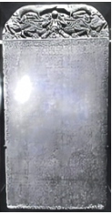

2025年北京市西城区中考历史试卷 · 选择题 第1、2、3、4、5题
1．（1.5分）1973年考古人员在浙江东部地区发现了距今约7000年的人类活动遗址，其发现包括：干栏式建筑遗迹、碳化稻粒、石磨盘、炊器、渔猎工具、象牙雕刻器等。说明该遗址（ ）
①已经采取定居的生活方式
②居民掌握了雕刻等技术
③进入到国家的社会形态
④印证我国出现了原始农业
A．①②③B．①②④C．①③④D．②③④
2．（1.5分）某同学将三国两晋南北朝时期的部分史实通过“归类”方式进行整理，如表中①②③处应依次填写（ ）
| 史实 |
政治 | 北魏时期的①______，促进了民族交融 |
经济 | 魏晋时期南方地区农业技术提高，粮食产量提升，缫丝、造纸等方面显著发展，南朝时的建康成为商业活跃大都市。体现了②______ |
科技文化 | 祖冲之的圆周率数值；贾思勰的③______；王羲之的《兰亭集序》等 |
A．商鞅变法、统一多民族国家的建立、《本草纲目》
B．孝文帝改革、江南地区的开发、《齐民要术》
C．“贞观之治”、政权分立、《资治通鉴》
D．王安石变法、经济重心完成南移、《天工开物》
3．（1.5分）我国古代兴修了诸多工程。长城与大运河这两项工程的建设都（ ）
A．推动了对外贸易的发展
B．促进了南北方经济文化交流
C．奠定了隋唐时期的繁荣
D．体现了古代劳动人民的智慧
4．（1.5分）某同学在阅读元朝王祯的《农书》时看到如下描述：“造板木作印盔，雕板木为字……然后排字作行……使坚牢，字皆不动，然后用墨刷印之。”这段文字记录了我国一项重大发明的改进，该发明是（ ）
A．造纸术B．火药C．指南针D．印刷术
5．（1.5分）如图是现藏于斯里兰卡国家博物馆的《布施锡兰山佛寺碑》，碑上刻有中文、泰米尔文和波斯文三种文字，碑文如图所示（部分）。该文物可用于研究（ ）

布施锡兰山佛寺碑 | 部分碑文：大明皇帝遣太监郑和、王贵通等，昭告于佛世尊曰……时永乐七年岁次己丑二月甲戌朔日谨施。 |
A．明朝皇权的不断强化B．明朝民族交融的加强
C．明朝对外关系的成就D．殖民者在亚洲的扩张